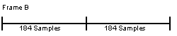

|
|
Influence of n_audio
The sequence and sound data developed for the previous version of the audio library can also be used with the n_audio library. However, because of the improvements outlined in Section 28.1, you will need to prepare the data following the guidelines below.
Effect of the Envelope
Effect of Processing Every 184 Samples
Set the Number of Samples Per Frame to a Multiple of 184
For example, when the playback frequency is 32 kHz, the number of required data for 1 frame is
The closest multiple to 533 is
Thus, Frame A can be set up as follows.
Figure 28.2.1 Frame A
It is possible to set up a value larger than 552 as the size of frame A. However, if it is set up much larger than 533, the required time for processing the frame may become longer than the time for creating 533 data in the former library, even though n_audio is used.
In Frame A,
samples become surplus samples and are carried over to next frame.
To adjust for the the surplus samples, prepare Frame B as follows.
Figure 28.2.2 Frame B
Combine Frame A and Frame B as follows. Use this 10-frame sequence to adjust the samples over time.
Figure 28.2.3 10-Frame Sequence Used to Adjust Samples Over Time
The total of output sample data numbers of these 10 frames is
and the actual number of the required sample data among 10 frames is
Thus, it becomes possible to adjust the surplus data of the whole application by using these 10 frames repeatedly.
In this manner, you must provide the adjustment of surplus data in the application, and set the number of sampling data created for 1 frame to a multiple of 184.
Please refer to the sample program, "playseq.audio," for an example of the method used to decide the specific frame size within the application.
Create Data that Do Not Require Audio Processing in the Middle of a Sub-Frame
Example 28-3 A Timing Gap Between Envelope Changes
When the envelope change (Attack - Decay) occurs within 1 sub-frame, the transition point is forced to move to the next complete subframe.
For example, if the playback frequency is 32kHz, the previous timing is a maximum of
off due to rounding errors.
To prevent the timing gap, each event needs to occur on the multiple integer of the minimum audio processing unit. When the playback frequency is 32kHz,
becomes the minimum processing unit. Therefore, at this moment, we adjust the timing of envelope change by setting the envelope (within the ".inst" file) to
The effect of the change from an exponential to a linear envelope is greatest at the time of release. The effect is such that it sounds like the release time has been extended because the attentuation rate is smaller at the beginning of the release. To compensate for this effect you can:
Because the n_audio library uses a minimum fixed audio processing unit made up of 184 audio samples, you must:
In n-audio the minimum audio processing unit is set to a fixed value of 184 samples per unit. The number of samples that can be processed by the RSP is also fixed at 184. fixed. Therefore, the number of samples that the application generates for each frame must be set to a multiple of 184.
32000 / 60 = 533.333 = 533
184x3 = 552
552 - 533 = 19

(184x3x9) + (184x2) = 5336
533x10 = 5330
Because we fixed the minimum unit of the audio process to 184 sampling data, gaps are produced depending upon the timing of the ON/OFF for sound, and the envelope transition points.
( 1 / 32000 ) x ( 184 / 2 ) = 2875 msec
( 1 / 32000 ) x 184 = 5750 msec envelope
{
attackTime = 17250; /* 5750 usec x 3 */
attackVolume = 127;
decayTime = 2501250; /* 5750 usec x 435 */
decayVolume = 0;
releaseTime = 201250; /* 5750 usec x 35 */
}
We adjust timing for each process using tempo value for the MIDI sequence data.
Specifically, it becomes as follows:
If you process a quarter note with 48 steps, the time "Qn" per quarter note becomes
| Qn = 0.00575 · 48 = 0.276 sec |
"Tempo" becomes
| Tempo = 60 / Qn = 217.39 BPM |
We adjust the timing of sequence data using "one to this integer" as the actual tempo.
Although, there is sequencer software that will not allow the decimal value of tempo to be input. In these cases, we try to rewrite the tempo value of MIDI data directly.
|
Copyright © 1999 Nintendo of America Inc. All Rights Reserved Nintendo and N64 are registered trademarks of Nintendo Last Updated January, 1999 |